Menampilkan 20 dari 20 Layar Sistem
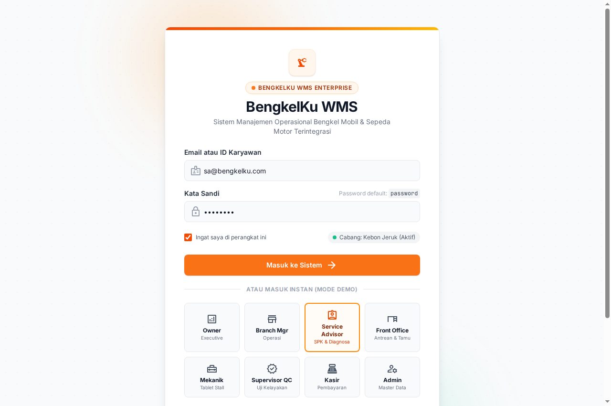
Halaman Masuk & Demo Switcher Multi-Role
Portal autentikasi tunggal dengan fitur Demo Switcher 1-klik untuk 8 peran staf internal (Owner, BM, Admin, FO, SA, Mekanik, QC, Kasir).
- ✓ Pemisahan hak akses ketat (Role-Based Access Control) otomatis
- ✓ Demo Switcher 1-klik untuk presentasi & pengujian lintas peran
- ✓ Redirect instan ke antarmuka yang sesuai dengan tugasnya
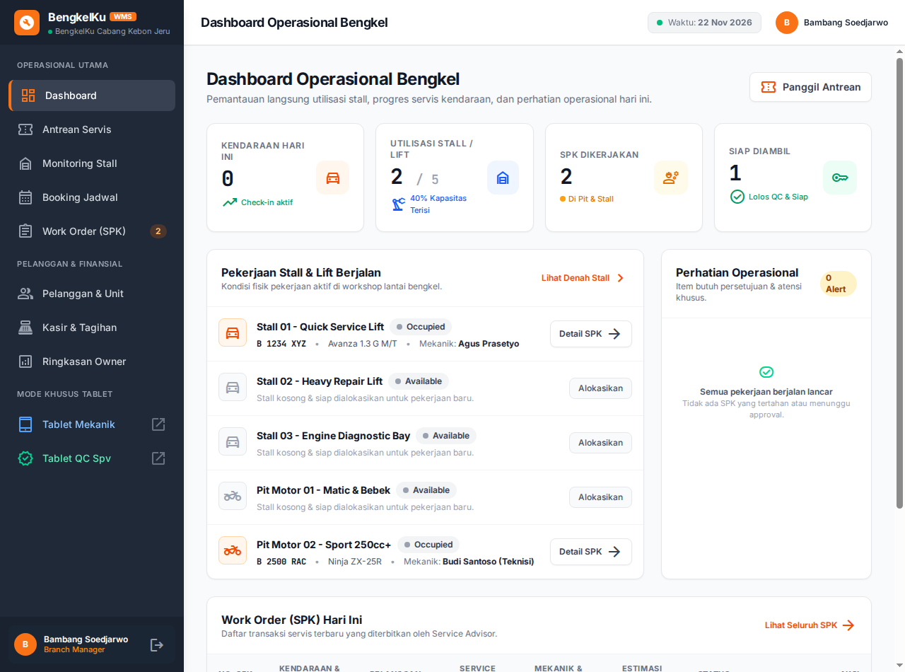
Dashboard Operasional Harian Bengkel
Pusat komando operasional bengkel untuk memonitor utilisasi lift/stall, daftar pekerjaan berjalan, antrean aktif, dan alert operasional real-time.
- ✓ KPI Card: Unit Masuk Hari Ini, SPK In-Progress, Menunggu Part, Siap Diambil
- ✓ Visualisasi okupansi Car Lift, Pit Motor, dan Diagnostic Bay
- ✓ Daftar pekerjaan aktif dengan SLA estimasi waktu selesai
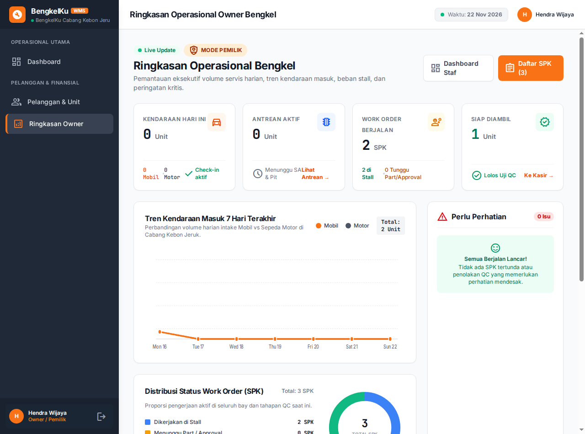
Dashboard Eksekutif & Ringkasan Finansial Owner
Tampilan tingkat tinggi khusus pemilik bengkel untuk melihat tren pendapatan, volume unit 7 hari, performa teknisi, dan margin suku cadang.
- ✓ Grafik tren volume masuk kendaraan 7 hari (Komparasi Mobil vs Sepeda Motor)
- ✓ Breakdown pendapatan: Penjualan Jasa Servis vs Penjualan Suku Cadang
- ✓ Produktivitas per mekanik dan rata-rata durasi pengerjaan per unit
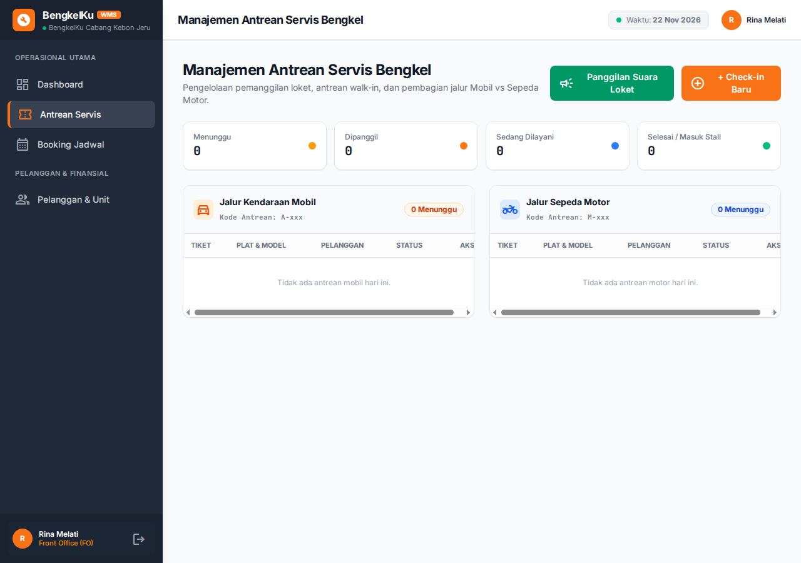
Manajemen Antrean Servis (Jalur Mobil & Motor)
Sistem antrean modern dengan pemisahan jalur atomik untuk mobil dan motor, lengkap dengan fitur panggilan suara otomatis dan check-in walk-in.
- ✓ Pemisahan jalur tiket: Prefix A-001 (Mobil) dan Prefix M-001 (Motor)
- ✓ Pemberian nomor atomik dengan Database Pessimistic Locking (Bebas Duplikat)
- ✓ Tombol Audio Broadcast untuk memanggil nomor antrean ke pengeras suara
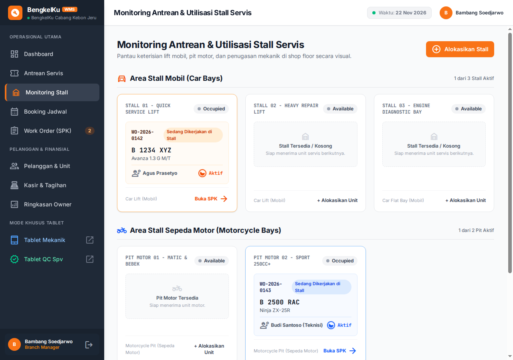
Monitoring Utilisasi Stall, Lift, & Bay
Peta digital lantai bengkel (Shopfloor Bay Layout) yang menampilkan status setiap car lift, flat stall, dan pit motor secara langsung.
- ✓ Indikator visual status stall: Kosong (Hijau), Terisi (Oranye), Perlu Bantuan (Merah)
- ✓ Identitas mobil, nopol, dan nama mekanik tertera jelas di tiap stall
- ✓ Timer durasi pengerjaan fisik real-time
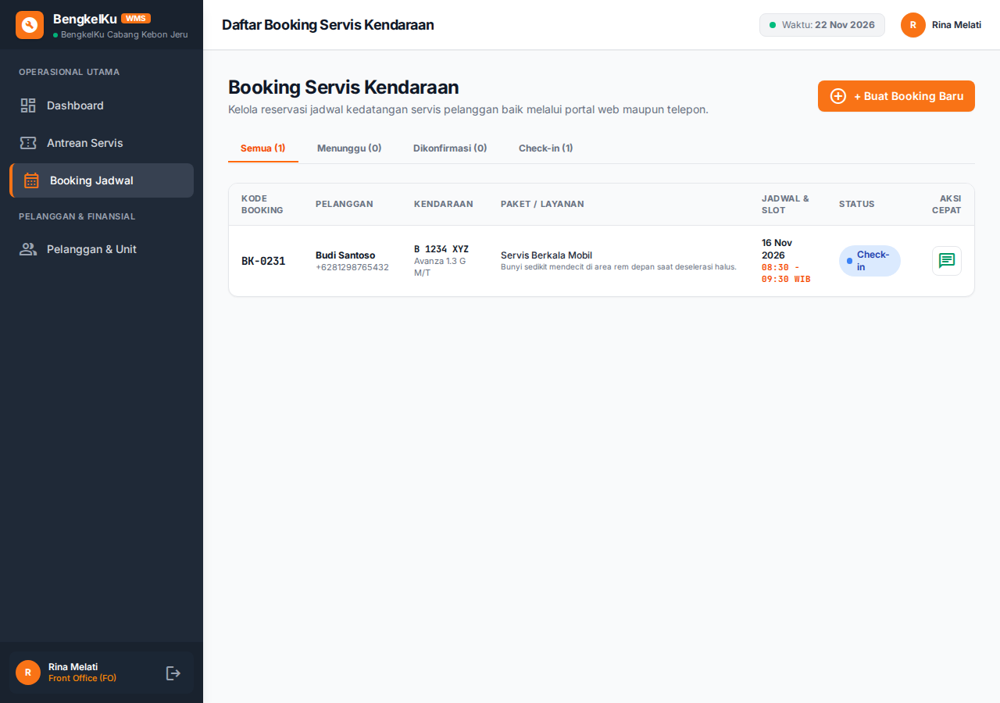
Daftar & Manajemen Jadwal Booking Servis
Tabel pengelolaan seluruh reservasi servis pelanggan dengan tab status cerdas (Pending, Dikonfirmasi, Checked-in, Dibatalkan).
- ✓ Penyaringan berdasarkan tanggal kedatangan, kategori servis, dan status
- ✓ Aksi 1-klik untuk konfirmasi kehadiran atau penjadwalan ulang
- ✓ Tombol notifikasi WhatsApp otomatis ke nomor handphone pelanggan
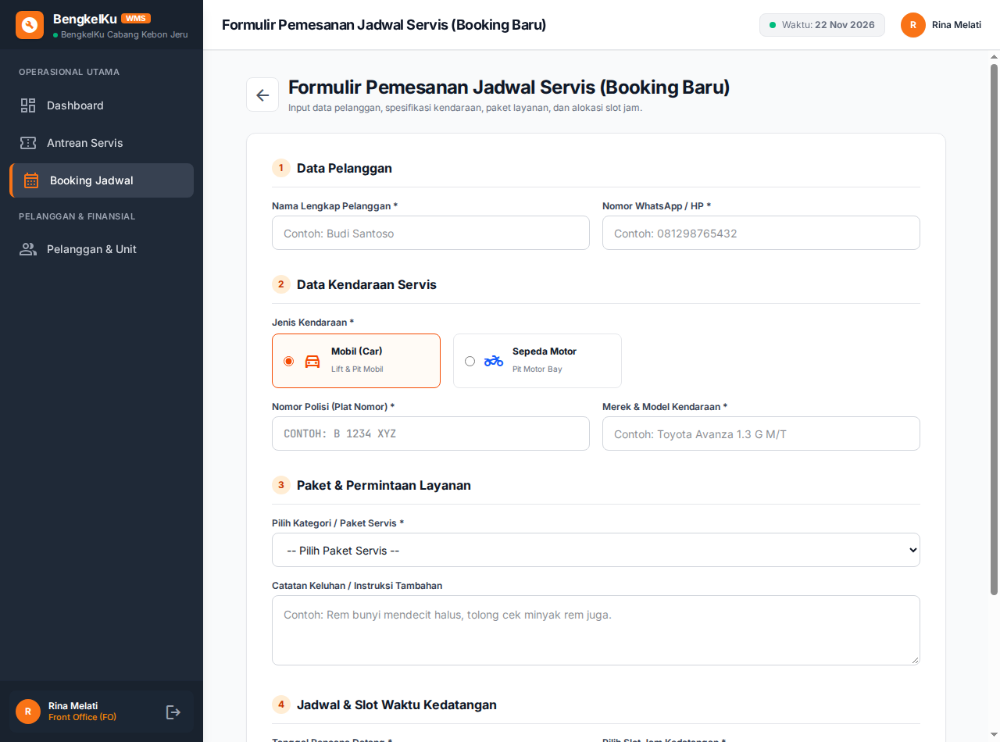
Form Registrasi Booking Servis Baru (Internal FO)
Formulir cepat pendaftaran reservasi bagi pelanggan yang menghubungi via telepon, WhatsApp resmi, atau datang langsung ke meja pendaftaran.
- ✓ Pencarian otomatis data pelanggan lama (Auto-fill data kendaraan)
- ✓ Pemisahan kategori servis: Servis Berkala, Tune Up, Ganti Oli, Perbaikan Berat
- ✓ Pemilihan kuota jam kedatangan (Pagi, Siang, Sore) dengan batas kapasitas
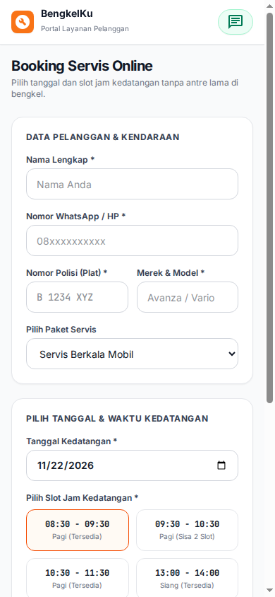
Portal Pelanggan: Pemilihan Jadwal Servis Mandiri
Antarmuka web seluler elegan bagi pelanggan untuk memilih tanggal dan jam servis sesuai waktu luang mereka langsung dari browser ponsel.
- ✓ Desain responsif mobile murni tanpa perlu download aplikasi di App Store/Play Store
- ✓ Kalender interaktif dengan indikator tanggal buka & slot yang tersedia
- ✓ Pilihan sesi jam ramah sentuhan (Pagi 08:00-11:00, Siang 13:00-15:00)
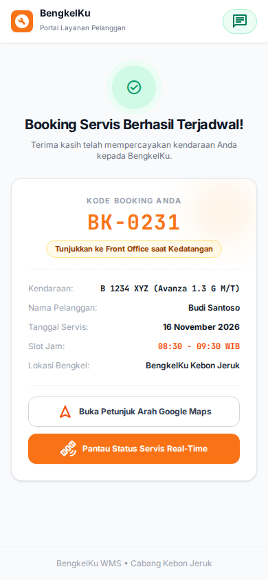
Portal Pelanggan: Tiket Konfirmasi Booking Digital
Halaman konfirmasi reservasi dengan kartu digital resmi memuat Kode Booking monospaced dan panduan kedatangan ke bengkel.
- ✓ Kode Booking unik resmi (contoh: BK-0231) dalam font monospaced
- ✓ Tombol Simpan Jadwal langsung ke Google Calendar atau Apple Calendar
- ✓ Tombol Buka Penunjuk Arah Google Maps menuju lokasi bengkel
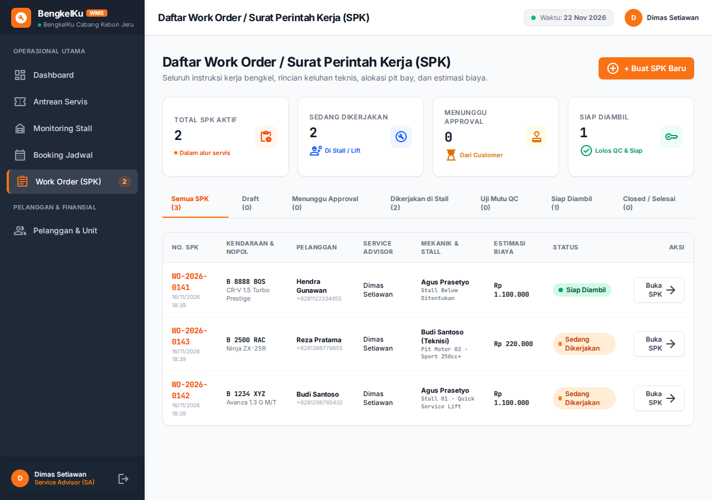
Manajemen Surat Perintah Kerja (SPK / Work Order)
Tabel densitas tinggi yang mencatat seluruh dokumen Surat Perintah Kerja (SPK) aktif maupun historis dengan informasi biaya & status lengkap.
- ✓ Nomor SPK resmi terstandar (contoh: WO-2026-0142)
- ✓ Status badge resmi (Opsi A) dengan dot indikator berdenyut saat pengerjaan
- ✓ Informasi teknisi penanggung jawab (Lead Mechanic) dan nomor stall
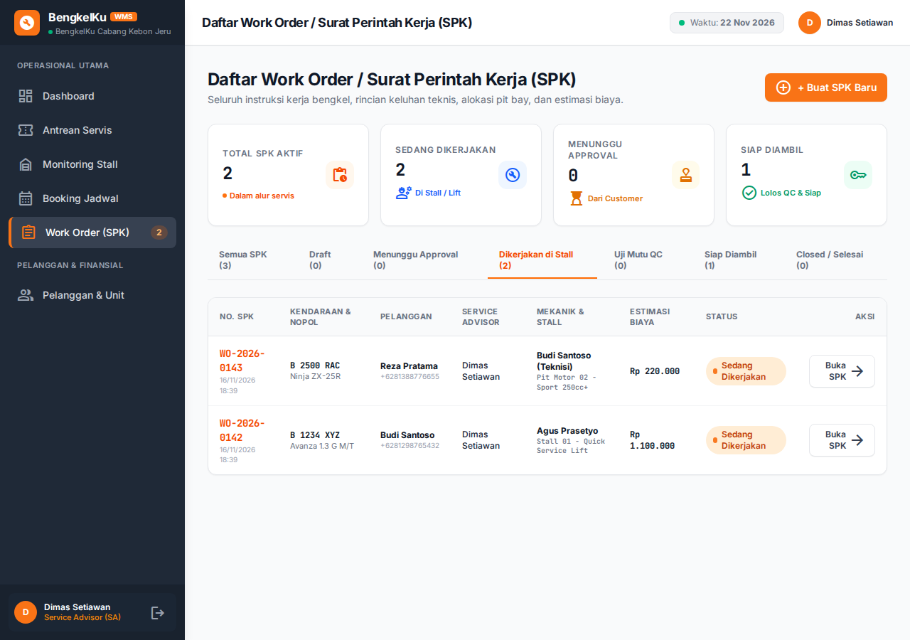
Manajemen SPK: Segmentasi & Tab Status Alur Servis
Tampilan tersegmen untuk memantau unit berdasarkan siklus hidup: Menunggu Persetujuan, Sedang Dikerjakan, Menunggu Part, Masuk QC, dan Siap Diambil.
- ✓ Tab counter dinamis yang langsung memperlihatkan jumlah mobil di tiap tahap
- ✓ Filter cepat untuk SPK yang membutuhkan perhatian darurat atau penambahan part
- ✓ Akses langsung ke lembar detail SPK dan pengiriman konfirmasi ke pemilik
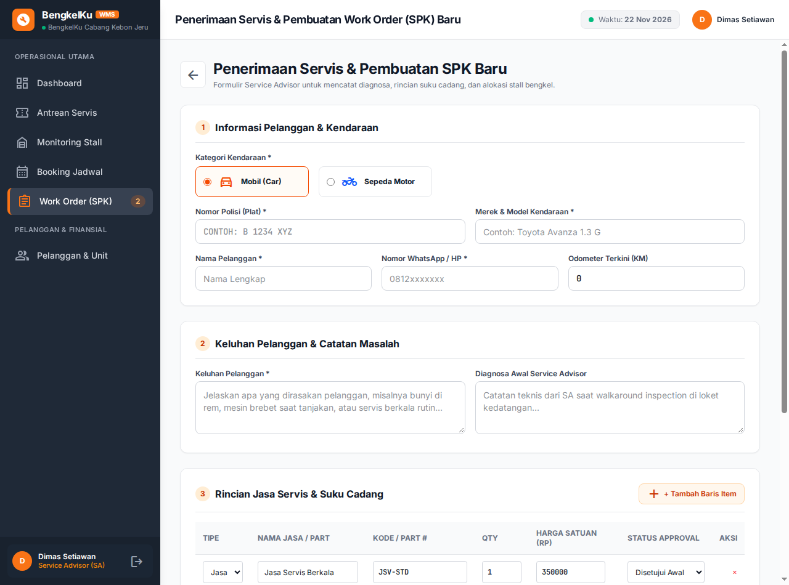
Form Penerbitan SPK Baru & Estimasi Servis
Formulir diagnosa teknis lengkap yang digunakan SA saat menerima kendaraan di pit resepsi servis untuk merumuskan estimasi biaya dan waktu.
- ✓ Pencatatan Odometer awal (KM) untuk validasi jadwal servis berkala
- ✓ Checklist inspeksi awal: Kondisi fisik bodi, keluhan pelanggan, dan diagnosa SA
- ✓ Pemilihan katalog jasa servis dan suku cadang asli dengan harga standar
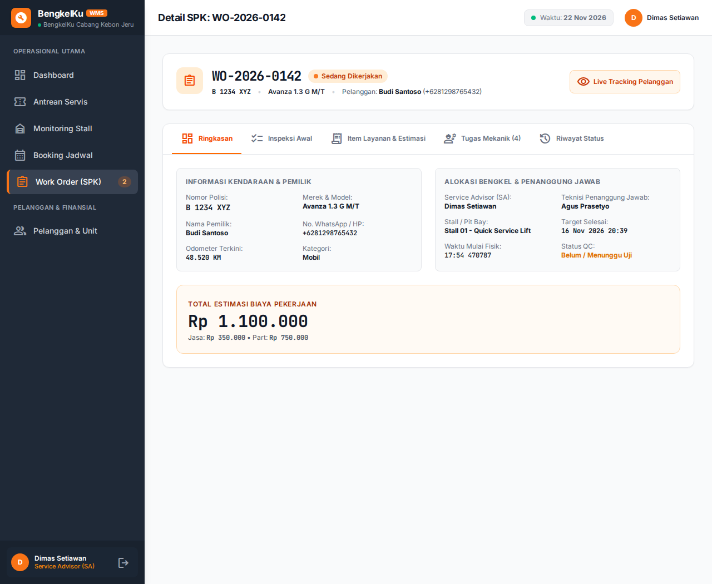
Detail 360° Surat Perintah Kerja (SPK Master View)
Pusat informasi komprehensif satu unit kendaraan yang mencakup 5 tab penting: Ringkasan Diagnosa, Lembar Inspeksi, Item Part & Approval, Tugas Mekanik, dan Riwayat Audit.
- ✓ Tab approval suku cadang: Status Pre-Approved, Menunggu Persetujuan, atau Ditolak
- ✓ Log audit status (Append-Only): Siapa mengubah status apa pada detik berapa
- ✓ Tombol kirim tautan persetujuan ke WhatsApp pelanggan dalam 1 klik
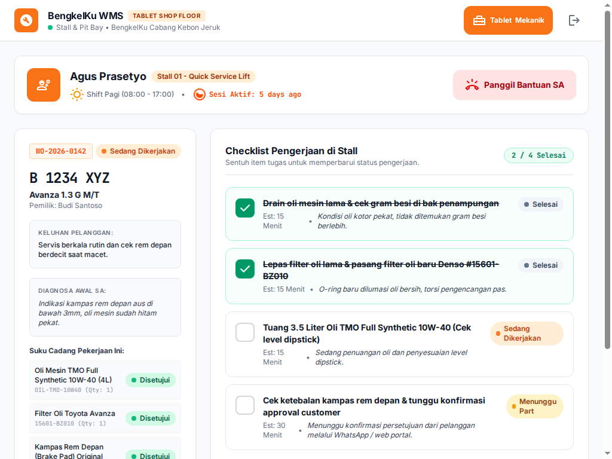
Antarmuka Tablet Mekanik (Tugas Saya)
Antarmuka ergonomis berorientasi sentuh yang dipasang pada tablet di setiap stall/bay, dirancang khusus untuk kenyamanan mekanik bertangan kerja.
- ✓ Target sentuh besar (Touch Target 48px - 52px) mudah ditekan bahkan saat bersarung tangan
- ✓ Timer pengerjaan digital monospaced aktif dengan tombol Mulai / Selesai tugas
- ✓ Checklist langkah perbaikan teknis interaktif
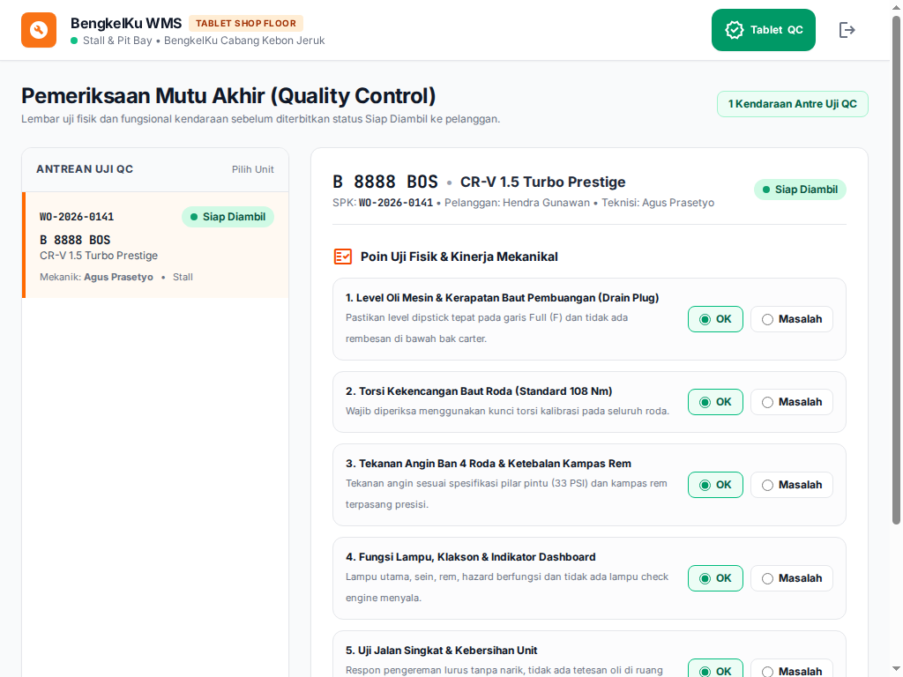
Antarmuka Tablet QC Supervisor (Uji Kelayakan)
Lembar verifikasi mutu pengerjaan digital sebelum mobil boleh dicuci atau diserahkan ke pelanggan, menjaga reputasi keselamatan bengkel.
- ✓ Checklist uji kelayakan 12 poin (Sistem Pengereman, Mesin, Kelistrikan, Tekanan Ban, Uji Jalan, Kebersihan)
- ✓ Tombol keputusan tegas: Lolos QC (Hijau Emerald) vs Gagal/Rework (Merah Rose)
- ✓ Kewajiban mengisi alasan teknis saat menolak pengerjaan (Rework Guardrail)
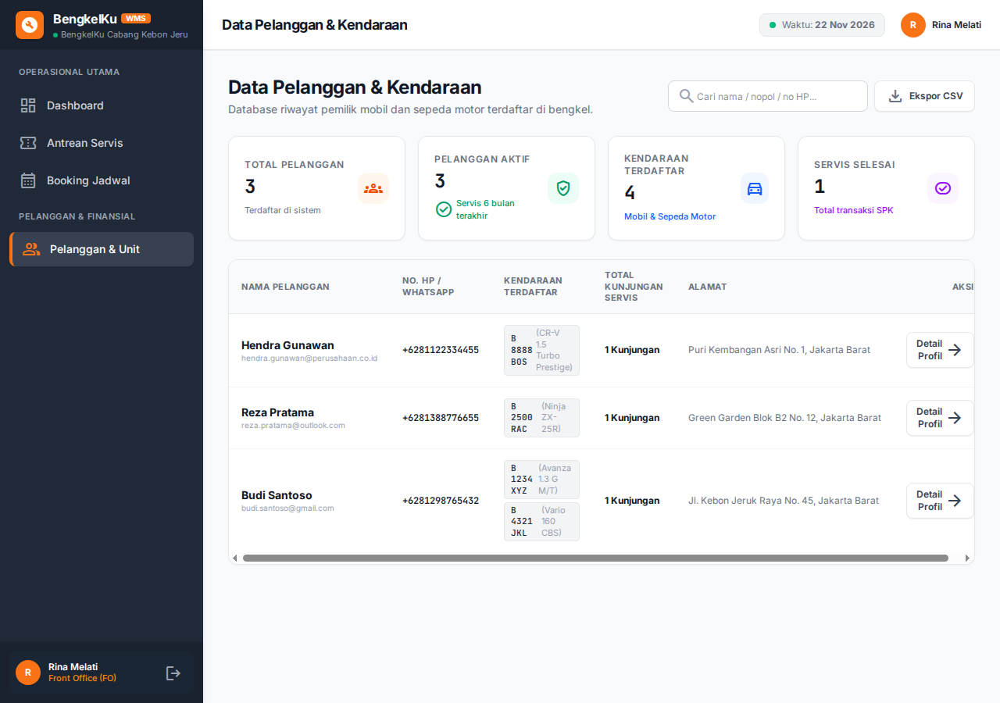
Database Master & CRM Pelanggan Bengkel
Basis data terpusat seluruh pelanggan pemilik mobil dan motor, lengkap dengan catatan transaksi, jumlah kunjungan, dan integrasi WhatsApp.
- ✓ Tabel pelanggan densitas tinggi dengan nomor telepon format E.164 (+62...)
- ✓ Statistik akumulasi kunjungan dan nilai total transaksi (Customer Lifetime Value)
- ✓ Tombol ekspor data ke format CSV / Spreadsheet untuk analisa pemasaran
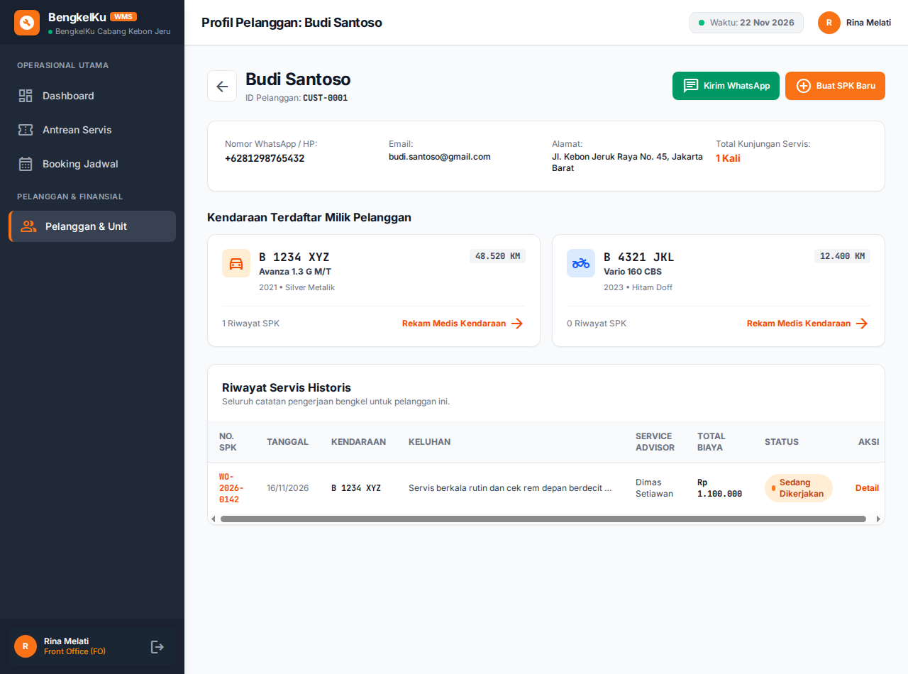
Profil 360° Riwayat Pelanggan (Customer Record)
Kartu profil terperinci pelanggan yang menampilkan seluruh kendaraan yang mereka miliki beserta histori riwayat perbaikan masa lalu.
- ✓ Identitas kontak terverifikasi dengan alamat lengkap
- ✓ Daftar kendaraan multi-unit (Mobil keluarga, mobil operasional, motor)
- ✓ Riwayat transaksi SPK masa lalu lengkap dengan total rupiah yang dibayarkan
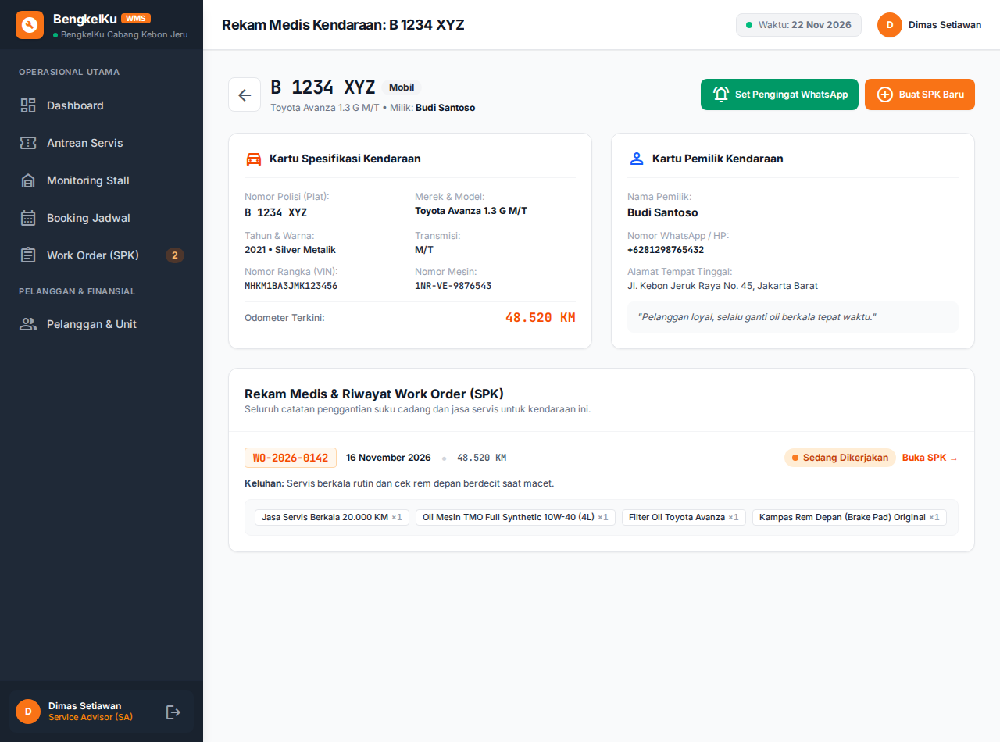
Kartu Medis Kendaraan (Vehicle Medical Record)
Rekam medis lengkap berbasis nomor polisi unik yang mencatat spesifikasi mesin, transmisi, nomor rangka (VIN), serta riwayat penggantian part.
- ✓ Spesifikasi teknis lengkap: Merk, Model, Tahun, VIN, No Mesin, Tipe Transmisi, Odometer KM
- ✓ Riwayat seluruh pekerjaan bengkel dan suku cadang yang pernah terpasang
- ✓ Pencarian nopol ternormalisasi (anti-duplikasi ejaan plat nomor)
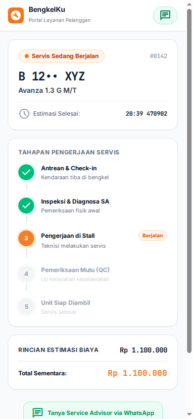
Portal Publik: Live Tracking Servis & Online Approval
Portal pemantauan transparan berbasis token kriptografis tanpa login, memungkinkan pelanggan memantau progres servis dan menyetujui part tambahan.
- ✓ Akses tanpa login via URL Token Kriptografis Unik (Aman & Privat)
- ✓ Nomor polisi disamarkan untuk privasi publik: B 12•• XYZ
- ✓ Live Progress Stepper: Diterima -> Pengerjaan Stall -> Uji QC -> Siap Diambil
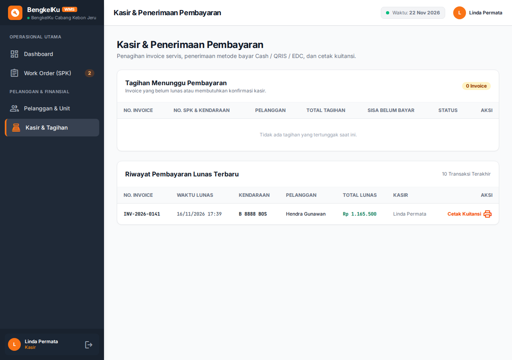
Modul Kasir & Penerimaan Pembayaran
Pusat penagihan SPK yang lolos uji kelayakan QC, penerimaan pembayaran multi-metode (Cash, QRIS, Transfer, EDC), dan pencetakan faktur resmi.
- ✓ Daftar SPK siap ditagih (Hanya yang telah disetujui lolos QC teknis)
- ✓ Rincian itemized faktur tagihan jasa servis dan suku cadang
- ✓ Pilihan metode bayar fleksibel: Tunai, QRIS, Debit/Kredit EDC, Transfer
Tidak ada fitur yang cocok
Coba ubah kata kunci pencarian atau reset filter perangkat & peran.